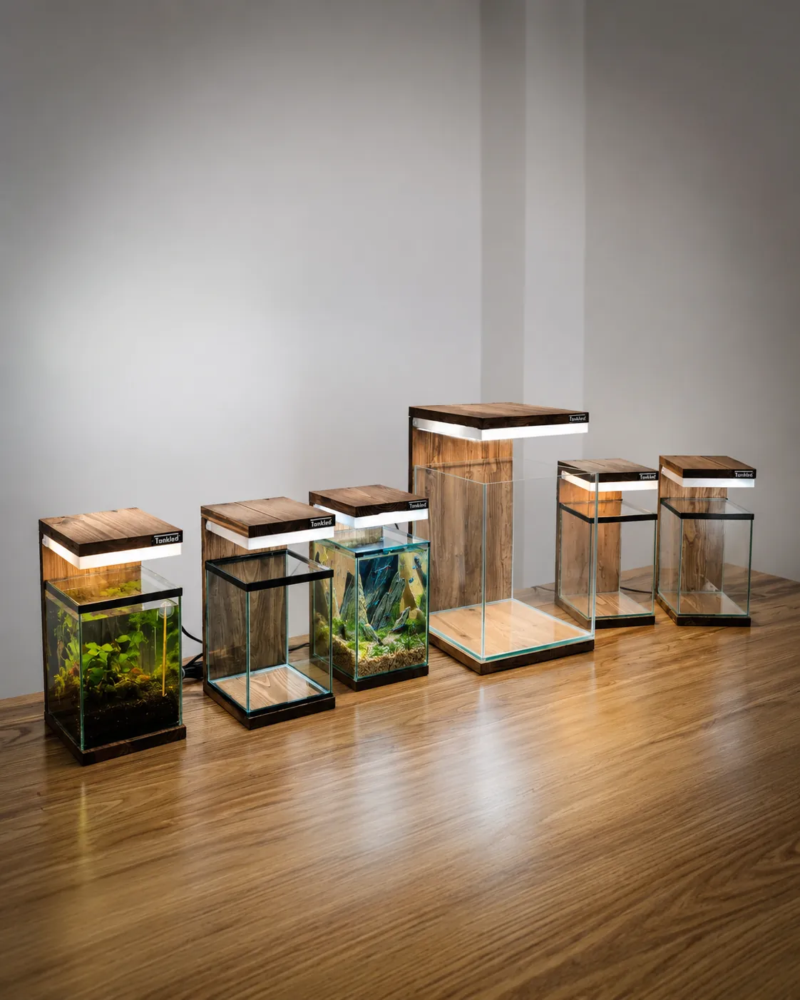

Hakkımızda: Ankara'da el yapımı akvaryum atölyesi

Tankled, bir akvaryumun yalnızca bir cam kap değil; mekânın ruhunu değiştiren, yaşayan bir tasarım nesnesi olabileceği inancıyla doğdu. Ankara Ostim'deki atölyemizde akvaryum, teraryum ve paludaryumları doğal masif ahşaptan, elde ve tek tek üretiyoruz.
Hikâyemiz
Tankled'ın temelinde, imalat sektöründe on yılı aşan üretim tecrübesi ve bir mühendisin titizliği var. Akvaryuma bir tutku olarak, hobi olarak başladık. Ama çok geçmeden raflardaki akvaryumların bize yetmediğini fark ettik: Çoğu, içi doldurulmayı bekleyen cansız bir cam kutudan ibaretti.
Biz başka bir şey istiyorduk. Her köşesi doğal, nefes alan, bulunduğu mekânla bütünleşen ve bir kez baktığınızda gözünüzü ayıramadığınız yaşayan bir obje. Bu fikrin peşinden giderek altı ay süren bir Ar-Ge ve geliştirme süreci yürüttük. Oranlardan ahşap birleşimlerine, buhar kapağının sürgüsünden ışığın renk sıcaklığına kadar her detayı mühendislik disipliniyle tasarladık, prototipledik ve defalarca test ettik.
Bu sürecin sonunda ortaya Betta Serisi çıktı: Estetiği işlevden, zanaati mühendislikten ayırmayan bir tasarım.
Her parça, elde ve tek tek
Bugün Ankara Ostim'deki atölyemizde her parçayı en ince dokunuşlarla, her detayını düşünerek, elimizle ve özenle üretiyoruz. Seri üretim yapmıyoruz; çünkü her ahşabın damarı farklı ve her parça kendi karakterini taşımayı hak ediyor.
Yaklaşımımız
- Tasarım odaklı: Her parça mimari bir obje gibi, bulunacağı mekânla birlikte düşünülür.
- El işçiliği: Gövde, cam ve aydınlatma atölyemizde tek tek hazırlanır ve kontrol edilir. Her parçanın ahşap damarı farklı olduğu için her ürün kendine özgüdür.
- Sorumlu üretim: Doğaya saygılı, geri dönüştürülebilir malzemeler kullanırız.
- Kolay bakım: Ürünlerimiz low-tech sistemlerdir; sürekli bakım ve teknik bilgi gerektirmez.
Neler üretiyoruz?
Bilgi paylaşımı
Akvaryumun keyifli olması doğru bilgiyle başlar. Bu yüzden bitkiler, balıklar ve malzemeler rehberlerimizi ve blog yazılarımızı herkesin kullanımına açık tutuyoruz.
Atölyemizi ziyaret edin
Ürünlerimizi Ankara Ostim'deki atölyemizde yerinde görebilirsiniz. Ziyaret öncesinde iletişim sayfamızdan bize ulaşmanızı öneririz.
Ankara'da el yapımı akvaryum
Ostim'deki atölyemizde doğal masif ahşaptan mobilyalı ve dekoratif akvaryumlar üretiyoruz. Türkiye'nin 81 iline ve yurt dışına kargo yapıyoruz. Ölçünüze özel tasarım için bize ulaşın.
WhatsApp ile yazın Hemen arayın